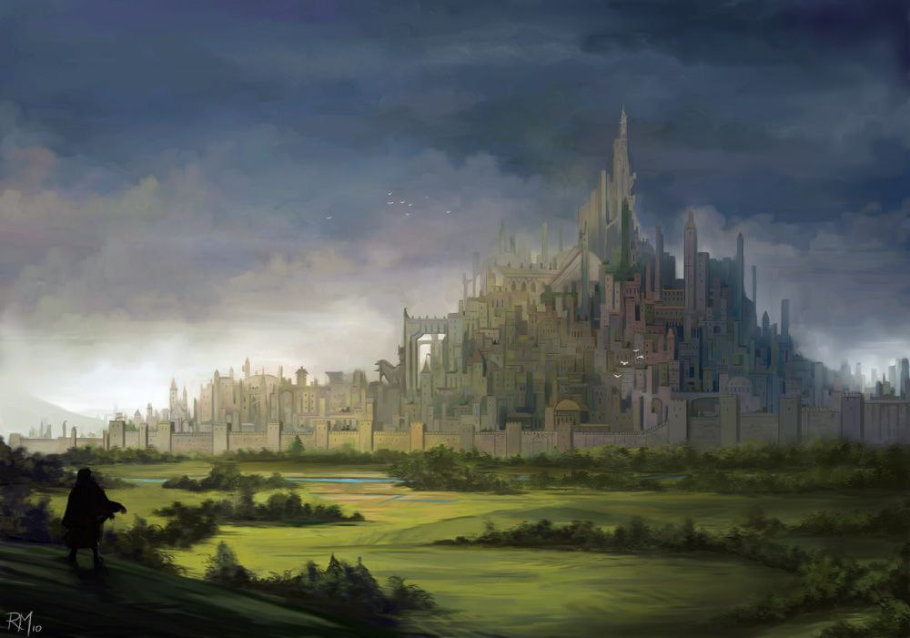
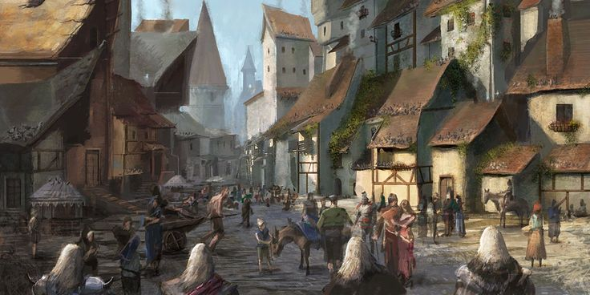
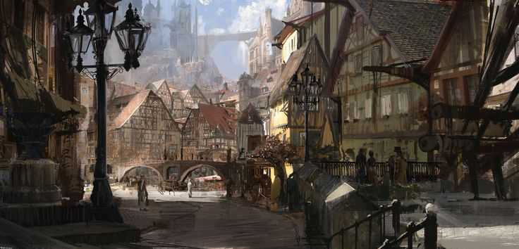

Внешний город Идрия — громадное и шумное кольцо, опоясывающее сердце столицы. Он заключён в прочные объятия первой городской стены — массивного, белокаменного, почти непроницаемого вала, сплетённого из гигантских кирпичей, магических знаков и рунных укреплений.

Толщина этой стены достигает таких размеров, что по ней свободно могут двигаться десятки патрулей, а в некоторых местах устроены целые склады боеприпасов и караульные посты. Инженерия и магия здесь идут рука об руку: древние сигилы, встроенные в кладку защищают стену от осад, подкопов и создают вокруг города сильнейший барьер. В стене три основных входа: Главные ворота — широкие и парадные, с золочёными гербами и алыми флагами королевства Идра. За ними начинается великая дорога, ведущая к городу Викселю. Западный портовый проход — через него идёт вся морская торговля с прочими государствами Средиземья: от соли и рыбы до экзотических растений Лисэма и материалов Торма. Южные врата — суровые и строго охраняемые. Они оканчивают торговый путь Харафар—Идрий и именно сюда приходят караваны из жаркого Хакара, приносящие с собой стекло, ракушечную броню, редкие специи, меха пустынных зверей и, порой, не самые приятные слухи.
Внутри стен раскинулся бурлящий мир труда, спекуляций и шума — торговые площади, ремесленные кварталы, груды лавок, рынков, мастерских и общественных зданий. Сюда первым делом попадает всякий путник, ступивший за врата Идрия, и именно здесь решается, найдешь ли ты своё место в этом городе — или затеряешься навсегда в его лабиринтах.

Сразу за главными воротами лежит огромная торговая площадь, просторная, каменная, рассчитанная на сотни прилавков, сцен и павильонов. Тут слышен звон металла, разнообразный говор, ругань, песни бродячих менестрелей и крики зазывал. Фрукты с юга, вольчи шкуры из Тихой Пущи, мечи тормийсих кузнецов, эльфийские манускрипты с иллюминациями — всё можно найти здесь. Дни ярмарок превращают площадь в цветной и шумный хаос. Позади площади — ремесленные районы, где одна улица посвящена кузнецам, другая — кожевенникам, третья — стеклодувам, четвёртая — пекарям, и так далее. Здесь повсюду дым, пар, опилки, запах теста, закваски, дубильной кислоты и сажи. Манфактуры соседствуют с лавками мастеров, склады с мастерскими, конюшни с постоялыми дворами. Здесь живёт рабочий класс — сплочённый, грубый, шумный, но без него город бы просто исчез. Во внешнем городе расположены военные цитадели, учебные гарнизоны, арсеналы, стратегические склады и опорные крепости, откуда осуществляется контроль как над торговыми потоками, так и над улицами. Стража патрулирует город, подавляя беспорядки и преследуя нарушителей закона.
Под городом простирается древняя канализационная система и катакомбы, местами уже забытые, где, как шепчут в народе, обитают узники, контрабандисты, еретики, а может быть, и настоящие чудовища. Большинство участков каналов до сих пор используются по назначению, другие стали настоящими подземными улицами. На окраине внешнего города, в стороне от основного шума, стоит огромный общегородской склеп — каменное святилище и мавзолей, в котором погребают знатных, богатых и уважаемых. Это подземное кладбище, уводящее галереями в глубины. Его коридоры освещаются лампадами, на стенах — мозаики, а в нишах покоятся саркофаги с гербами домов, купеческих гильдий и храмовых каст. Здесь всё пронизано тишиной и уважением. Обычные горожане, чья жизнь не дошла до титулов или богатств, покоятся за чертой города — на равнинных кладбищах, поросших тальниками и колокольчиками.

Жилые кварталы внешнего Идрия — плотные и разномастные. Дома здесь в основном двух—трёхэтажные, из камня и дерева, с вывешенным бельём, подстриженной лозой и окнами, затянутыми тряпками. Местные таверны — настоящие центры общения. Некоторые из них пользуются дурной славой, как логова контрабандистов, другие — наоборот, известны своим добрым элем и домашними пирогами. На каждом углу — водные колодцы, казармы городской стражи, цирюльни, прачечные, алхимики и знахари (но редко среди них можно встретить действительно качественных), предлагающие и отвары, и опасные порошки, и то, что не упоминается в догмах церкви.
Тёплые корчмы приютят приезжего, а надсмотрщики позаботятся о повозке. По улицам ходят бродячие проповедники, странствующие актёры, попрошайки, солдаты в увольнении и просто обычный люд. Город живёт своей жизнью.